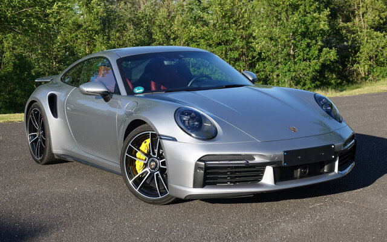

| Навігація: | Інформація | Історія моделі | Дизайн | Характеристики | Вплив | Цікаві факти |
| Porsche 911: Ікона спортивних автомобілів |

|
Porsche 911 — це не просто автомобіль, це легенда автомобільного світу. Вперше представлений у 1963 році, 911 став синонімом спортивного автомобіля і символом німецької інженерної досконалості. 🏁 Міжнародний день Porsche 911 відзначається щорічно 9 листопада, що підкреслює важливість цієї моделі не лише для бренду Porsche, але й для всієї автомобільної індустрії. З моменту свого дебюту Porsche 911 постійно еволюціонував, зберігаючи при цьому свою унікальну ідентичність. Це один з найстаріших спортивних автомобілів, що досі виробляються, і його вплив на автомобільний дизайн та інженерію неможливо переоцінити. |
||
| Історія моделі |
|
Історія Porsche 911 — це історія постійного вдосконалення та інновацій:
Кожне нове покоління Porsche 911 приносило значні технологічні вдосконалення, зберігаючи при цьому характерний силует та філософію дизайну, що зробили цю модель легендарною. |
| Дизайн |
|
Дизайн Porsche 911 є одним з найбільш впізнаваних у світі автомобілів:
Дизайн Porsche 911 є прикладом того, як можна зберігати вірність традиціям, одночасно відповідаючи сучасним вимогам аеродинаміки та безпеки. |
| Характеристики |
|
Porsche 911 завжди відзначався видатними технічними характеристиками:
Porsche 911 завжди був на передньому краї автомобільних технологій, встановлюючи стандарти продуктивності для спортивних автомобілів. |
| Вплив на автоіндустрію |
|
Вплив Porsche 911 на автомобільну індустрію важко переоцінити:
Porsche 911 не просто автомобіль, це культурний феномен, що вплинув на розвиток всієї автомобільної індустрії. |
| Цікаві факти |
|
| ↑ Догори ↑ |